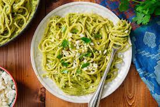

Green Spaghetti

The Green Spaghetti is a simple concept with the touch of a professional. The noodles are cooked to perfection, and dressed in a garlic sauce that is flavorful without being overpowering. The shrimp was absolutely delicious (and I don't even like shrimp), and contrasts the green color of the pasta in a very pleasing way. If you're one to stick to classics, but want something a bit new, definitely go for the Green Spaghetti!
- 4 lg. poblano peppers
- 1/4 c. packed cilantro leaves, plus more garnish
- 1 small yello onion, chopped
- garlic cloves, chopped
- 2 tbsp. butter
- 1/4 c. low-sodium vegetable stock or water
- 1 lb. spagthetti
- 4 oz. cream cheese, cubed
- kosehr salt
- freshly ground black pepper
Turn broiler to high and line a medium baking sheet with foil. Place peppers on baking sheet and broil, turning occasionally with tongs, until blackened on all sides. Transfer chilis to a heat-proof bowl and cover with plastic wrap. Let peppers steam for 10 minutes, then remove plastic wrap and peel skins off peppers. Remove stems and seeds and roughly chop peppers.
Combine peppers, cilantro, onion, and garlic into a food processor or blender and blend until smooth.
In a large skillet over medium heat, melt butter. Pour in pepper mixture, then stir in vegetable stock or water. Cook, stirring occasionally, until thickened slightly, 3 to 4 minutes.
Meanwhile, make spaghetti: In a large pot of boiling salted water, cook spaghetti according to package instructions. Reserve 1 cup pasta water then drain.
Add cream cheese to sauce and stir until it has completely melted into the sauce. Season with salt and pepper. Toss cooked pasta with sauce, adding pasta water to loosen up the sauce, if needed. Divide onto plates and garnish with cilantro and queso fresco.
This is one of my favorite dishes in the home! Whenever my lovely girlfriend makes this, it gets me exited for the night when i hear that green spaghetti is on the menu for dinner. With this recipe, now you too can enjoy this awsome dish.